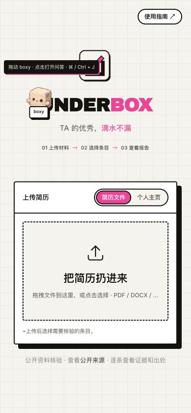
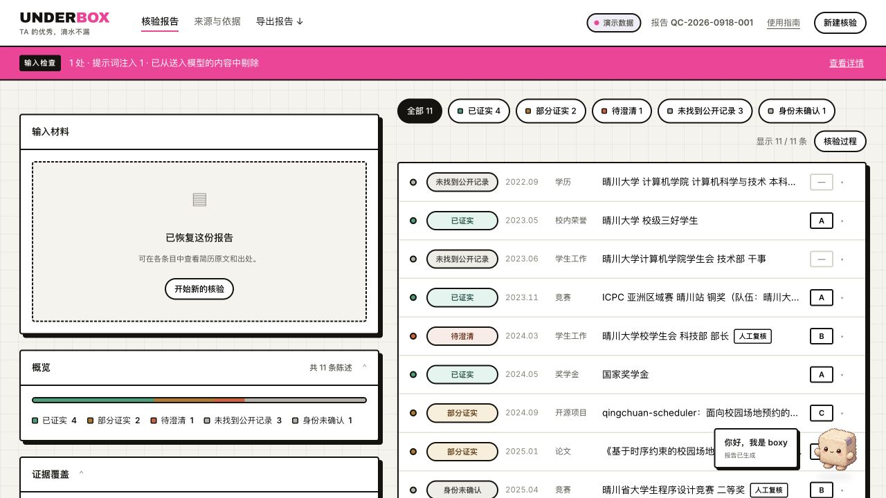
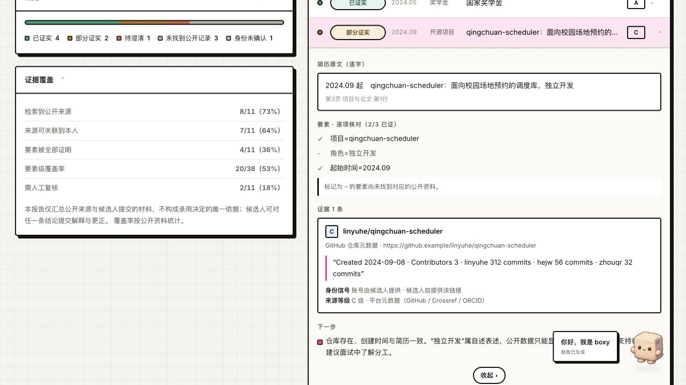
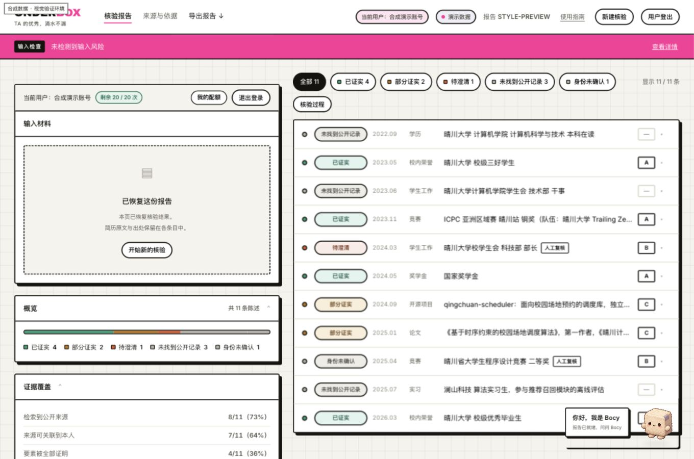
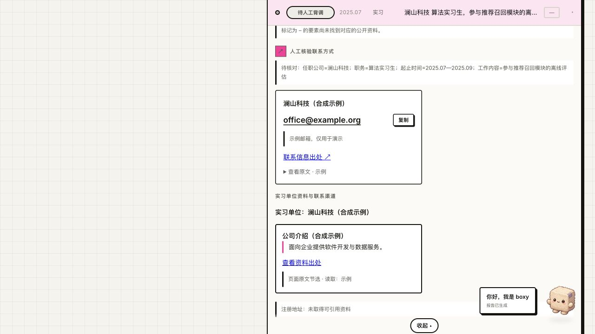
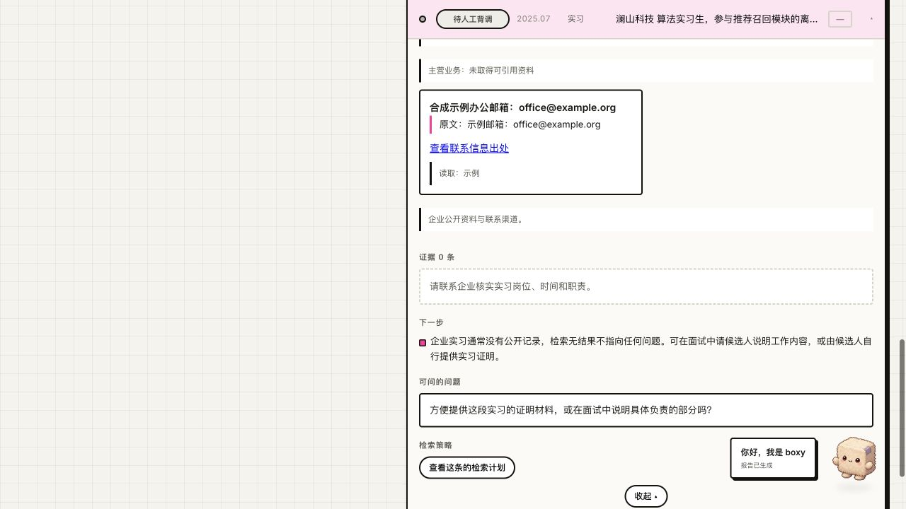

OPEN SOURCE · PRODUCT FILM
UNDERBOX®
让每一次核对，都有迹可循。
01 / THE QUESTION
01 / THE PROBLEM
一份履历，
多个待核对的事实。
IDENTITY同名，是同一个人吗？
ROLE参与，是否等于负责？
EVIDENCE没有记录，又意味着什么？
未找到公开记录 ≠ 经历不真实
02 / GET STARTED
从一份简历，
开始核验。
上传简历或填写个人主页，
选择需要核验的条目。
上传材料 → 选择条目 → 查看报告

真实产品界面 · 上传入口
03 / THE WORKSPACE
让核验
回到具体事实。
原文、要素、来源与待补充事项
在同一份报告中逐条查看。
CLAIM-LEVEL VERIFICATION
UNDERBOX / 核验工作台

真实产品界面 · 合成演示数据
04 / CLAIM-LEVEL VERIFICATION
一段经历，拆成可核对的要素。
履历原文 · 示意2026 年数学建模竞赛
获奖 · 担任队长原文保留，逐项拆解
获奖 · 担任队长原文保留，逐项拆解
EXTRACT
01赛事 / 年份2026 数学建模竞赛
02获奖信息奖项与级别
03个人角色队长身份
技术原理示意 · 不代表实际核验结果
05 / AGENT ORCHESTRATION
同一工作流，不同核验路径。
UNDERBOX任务协调策略 · 查询 · 预算
01 / EDUCATION学历核验学校 · 专业 · 学段
02 / COMPETITION竞赛核验赛事 · 名单 · 奖级
03 / PUBLICATION论文核验作者 · 论文 · 来源
04 / PROJECT项目贡献核验仓库 · 提交 · 贡献
技术原理示意 · 模块名称基于现有代码
06 / EVIDENCE
证据，不止
一个搜索结果。
打开来源，回读原文。
核对身份，再关联具体要素。

真实产品界面 · 合成演示数据
07 / DETERMINISTIC JUDGMENT
理解交给模型。
判定交给规则。
01
LANGUAGE MODEL理解与抽取拆分陈述
提取页面原文
→
02
DETERMINISTIC RULES身份与要素判定来源 · 身份 · 时间 · 角色
逐项评估，保留不确定性
技术原理示意 · 实际规则见 open_box/app/judge.py
08 / THE REPORT
结论有边界，
下一步有方向。
部分证实，是正常状态。
证据不足，保留为未知。
已证实部分证实未找到公开记录
UNDERBOX / 示例报告

真实产品界面 · 合成演示数据
09 / FOLLOW-UP
查到线索，
也能继续追问。
企业与院校公开资料、人工联系渠道，
以及基于报告的 Boxy 问答。
机构资料 / 联系方式 / 报告问答
企业资料 ↗

人工核验联系方式 ↗

真实产品界面 · 合成演示数据
OPEN SOURCE · BUILT FOR CLARITY
UNDERBOX®
让每一次核对，
都有迹可循。
核验的是陈述，不是人。github.com/Lonid-C/under-box ↗
当前配音
UNDERBOX
产品与技术演示 · 02:57
建议使用 Chrome / Edge，录制比例 16:9